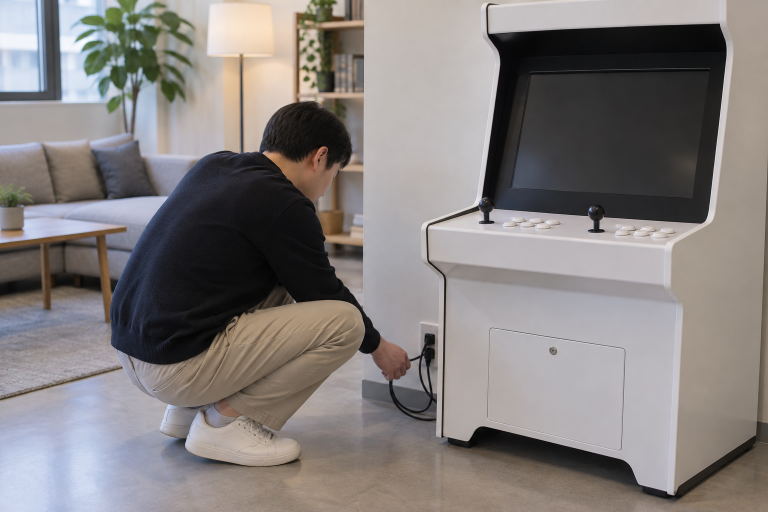
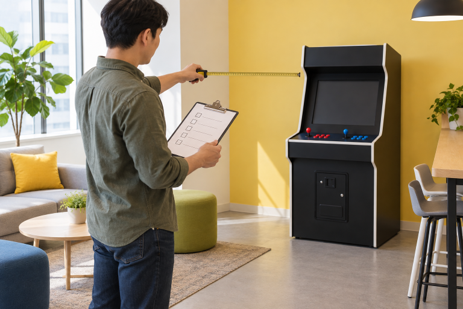

매장이나 사무실에 놓을 오락기는 가격보다 설치할 공간, 이용하는 사람, 조작과 소음 환경, 배송과 문의 방법을 먼저 확인해 고르는 것이 좋습니다. 휴게 공간에서 안전하게 놓고 자주 사용할 수 있는지를 기준으로 보면 선택이 쉬워집니다.

설치 공간과 이동 경로를 먼저 확인하세요
오락기를 둘 자리의 폭과 깊이뿐 아니라 반입할 현관과 복도, 전원선과 화면 연결에 필요한 여유를 살펴보세요. 직원이나 방문자가 지나는 길을 막지 않는 위치인지도 확인하세요.
매장과 사무실용 오락기는 설치 공간과 이동 동선이 먼저 맞아야 합니다.
처음 설치할 때 확인할 항목을 참고할 수 있습니다.

이용하는 사람과 조작 환경을 생각하세요
여러 사람이 함께 사용할지, 잠깐 쉬는 시간에 사용할지에 따라 편한 조작부와 화면 위치가 달라집니다. 노리박스 제품 목록에는 TV 연결형, 분리형, 신형HX처럼 서로 다른 형태의 상품이 별도로 안내되어 있어 상품명과 구성을 비교할 수 있습니다.
이용하는 사람과 조작 환경이 맞아야 설치 뒤에도 자주 사용하기 쉽습니다.
소음과 운영 시간을 함께 확인하세요
사무실이나 매장에서는 소리가 다른 업무나 손님에게 영향을 주지 않는지 생각해야 합니다. 둘 위치와 이용 시간을 먼저 정하고, 필요한 경우 소리를 조절하는 방법도 참고하세요.
설치 전 소음과 이용 시간을 정하면 공간을 함께 쓰기 편합니다.
배송과 문의 방법을 확인하세요
제품자세히보기에서 상품 형태를 확인하고, 설치 환경이나 구성에서 확인이 필요한 내용은 연락하기에서 문의 채널을 확인하세요. 배송 전 준비 사항과 문의 방법까지 정리하면 설치 뒤의 안내를 받기 쉽습니다.
배송과 문의 방법을 확인해야 매장과 사무실 환경에 맞는 선택을 마무리할 수 있습니다.